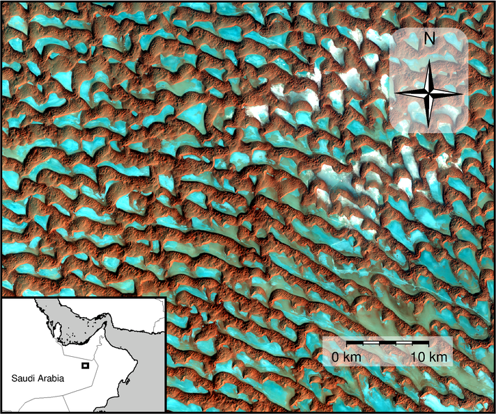
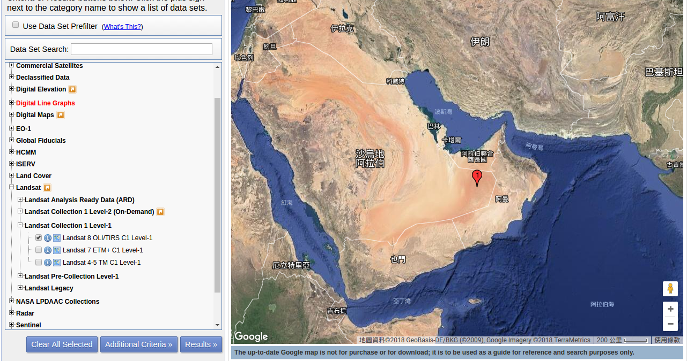
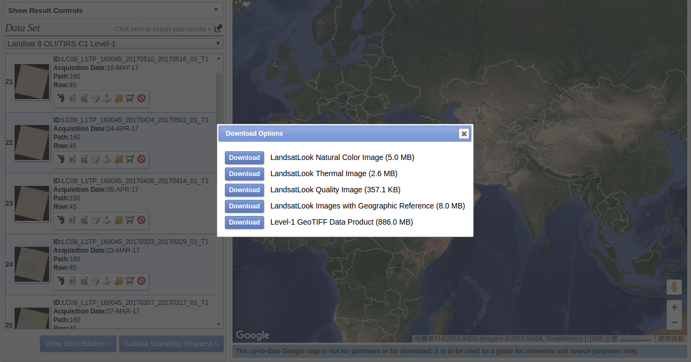

加入地圖元素
Contents
13. 加入地圖元素#
為了使呈現的資料更容易判讀，一張地圖上通常會含有其它的輔助性圖示。除了網格線和地圖四周的座標數字外，常見的圖示還有比例尺、指北記號以及分圖等等。在本章中，我們要來試著使用 GMT 標上這些地圖元素。
13.1. 目標#
繪製魯卜哈利沙漠 (Rub』 al Khali 或 الربع الخالي) 其中一個小區域的 Landsat 衛星影像，並標上指北針、比例尺及在阿拉伯半島的大略位置。魯卜哈利沙漠具有全世界最大的連續沙丘區域1，也是全世界最杳無人煙的地方之一。如同其阿拉伯語的意思「空曠的四分之一」，在這片區域除了沙丘以外幾乎什麼也沒有；然而，魯卜哈利沙漠的衛星影像卻讓我們發現了大地之母的藝術實驗室。無數的新月丘連綿不絕，日以繼夜的移動、合併與分離，奇幻的畫面甚至會讓你懷疑這是否是真的自然景觀。由於以上特殊的地理、氣候條件，魯卜哈利沙漠也是研究由風力所形塑的地表作用的絕佳地點。在本衛星影像中，所有的新月形沙丘似乎都朝向相同的方向。這個事實告訴了我們在這個區域，盛行風是從西北偏北的方向吹來。為什麼？請看這裡有地形學上的解釋。
{kind=link}
直接觀看指令稿
13.2. 使用的指令與概念#
gmtset- 更改 GMT 的預設作圖參數grdhisteq- 查看網格檔的數值分佈grdinfo- 由網格資料建立-R設定grdimage- 以 RGB 資料進行繪圖psbasemap- 添加不同的地圖元素pscoast- 繪製海岸線、國界與海域填色pstext- 在地圖上加入文字psxy- 輸出檔尾psconvert- 把 ps 檔轉成 png 檔並保留透明度設定外部指令
echo- 把資料輸入到管線命令中如何使用正確的
-J投影選項套疊衛星影像與其他地理空間資料如何繪製分圖 (Map Inset)
13.3. 前置作業#
Landsat 衛星影像可以從美國地質調查局 (USGS) 管理的網站 EarthExplorer 取得。前往 EarthExplorer，然後在「Address/Place」搜尋的地方輸入 Rub’ al Khali，然後按下 show，選擇下方出現的 魯卜哈利沙漠 一欄。由於沙漠範圍很大，你可以拖曳地圖上的紅色定位點到較為靠近範例地圖的地方。接著，按下下方的 Data Sets >>。你可以使用搜尋框或下方的分類目錄，找到並勾選 Landsat 8 OLI/TIRS C1 Level-1 的資料集，然後按下 Results >>。
接下來，應該會有許多資料呈現在左側搜尋結果欄中。找到名為 LC08_L1TP_160045_20170408_20170414_01_T1 的資料，按下「Download Options」的圖示。本資料需要登入才能下載，如果你尚未有 USGS 帳號，可以花幾分鐘註冊，只需要一組電子信箱即可。登入之後，選擇 Level-1 GeoTIFF Data Product (886.0 MB) 的資料格式。
下載之後解壓縮，你會發現其中有許多 GeoTIFF 檔案，每個檔案代表一個特定的影像波段。Landsat 網站上說明了每個編號各自代表的波段。在本教學中，我們要使用可見光的紅、綠、藍三個波段 (RGB)，編號分別是 B4、B3 和 B2。為了方便分享輸入檔以及增強影像的對比，我對這三個影像進行了如下操作：
裁切影像，影像的邊緣座標定在 x = [190000 250000] 以及 y = [2410000 2460000] (UTM 座標)。
使用直方圖增強影像對比 (Histogram Stretching)。
轉檔成 NetCDF 格式。
使用的腳本如下所示，其中運用了 GDAL 函式庫中的 gdal_translate 跟 GMT 中的 grdhisteq 指令。相關的操作將在之後的章節中介紹，這裡就不多加贅述，把重心放在地圖元素的繪製上。
# ==== 設定輸入檔 ====
in_tif_r="LC08_L1TP_160045_20170408_20170414_01_T1_B4.TIF"
in_tif_g="LC08_L1TP_160045_20170408_20170414_01_T1_B3.TIF"
in_tif_b="LC08_L1TP_160045_20170408_20170414_01_T1_B2.TIF"
# ==== 使用迴圈逐一處理輸入檔 ====
for i in $in_tif_r $in_tif_g $in_tif_b; do
# ==== 裁切 GeoTIFF 影像 ====
gdal_translate -projwin 190000 2460000 250000 2410000 $i ${i/.TIF/_s.TIF}
# ==== 計算影像的直方圖，設定影像飽和 (黑色或白色) 時的像素值 ====
vmin=$(grdhisteq ${i/.TIF/_s.TIF} -D -C50 | head -n 1 | cut -f 2)
vmax=$(grdhisteq ${i/.TIF/_s.TIF} -D -C50 | tail -n 1 | cut -f 1)
# ==== 使用剛剛設定的影像飽和值來轉檔 ====
gdal_translate -of NetCDF -scale $vmin $vmax ${i/.TIF/_s.TIF} ${i/.TIF/_s.grd}
done
腳本的輸出是三個 .grd 檔。如果你的電腦沒有安裝 GDAL 或純粹為了方便起見，
你也可以直接從以下連結取得本章節會使用的 Landsat 8 .grd 檔案：
LC08_L1TP_160045_20170408_20170414_01_T1_B2_s.grd
LC08_L1TP_160045_20170408_20170414_01_T1_B3_s.grd
LC08_L1TP_160045_20170408_20170414_01_T1_B4_s.grd
13.4. 操作流程#
在繪圖之前，我們先來使用 grdinfo 確認一下要使用的資料。
$ grdinfo LC08_L1TP_160045_20170408_20170414_01_T1_B2_s.grd
..... #(我這裡略過了一些段落)
LC08_L1TP_160045_20170408_20170414_01_T1_B2_s.grd: Title: GDAL Band Number 1
LC08_L1TP_160045_20170408_20170414_01_T1_B2_s.grd: Grid file format: nf = GMT netCDF format (32-bit float), COARDS, CF-1.5
LC08_L1TP_160045_20170408_20170414_01_T1_B2_s.grd: x_min: 190015 x_max: 249985 x_inc: 30 name: x coordinate of projection [m] nx: 2000
LC08_L1TP_160045_20170408_20170414_01_T1_B2_s.grd: y_min: 2410014.997 y_max: 2459985.003 y_inc: 29.9940011998 name: y coordinate of projection [m] ny: 1667
LC08_L1TP_160045_20170408_20170414_01_T1_B2_s.grd: z_min: NaN z_max: NaN name: GDAL Band Number 1
從這裡可以看出我們的資料並不是使用經緯度座標，而是某個投影座標，每個像素的尺寸是 30 公尺。如果使用 gdalinfo 確認原本的
GeoTIFF 檔，可以進一步知道這個座標系統是 UTM Zone 40N。像素的最大與最小值在這裡錯誤的顯示成 NaN，我們需要使用 grdhisteq 來進一步的檢查。grdhisteq 是 GMT 中對網格檔進行數值統計的工具，我們要使用最基本的語法，在螢幕上輸出網格檔數值的分佈情形。
$ grdhisteq -D LC08_L1TP_160045_20170408_20170414_01_T1_B2_s.grd
# -D: 輸出資訊到檔案或螢幕上
0 14 0
14 25 1
25 35 2
35 42 3
42 49 4
49 56 5
56 63 6
63 71 7
71 79 8
79 91 9
91 111 10
111 139 11
139 167 12
167 192 13
192 221 14
221 587 15
grdhisteq 預設的輸出，是把所有的像素值依照大小均分成 16 等分。從輸出資料中，我們可以知道像素值位在 0 到 14 之間的像素佔了十六分之一，而像素值在 221 到 587 之間的像素也佔了十六分之一。接下來，我們就試著使用 grdimage 來輸出影像看看。在之前的章節，我們使用 grdimage 時需要給定對應的色階檔，讓指令照著輸入檔像素值的大小來給定顏色。如果我們想要不經由色階檔直接指定每個像素的顏色，grdimage 也是可以作到，不過要遵循以下的輸入方法：
$ grdimage 紅色網格檔(R) 綠色網格檔(G) 藍色網格檔(B)
如果一次指定三個網格檔，grdimage 會使用指定 RGB 顏色值的方式繪圖，這時第一個網格檔會被當作紅色像素值，第二個網格檔會被當作綠色像素值，第三個網格檔會被當作藍色像素值。我們馬上就來試試看：
# ==== 設定變數 ====
out_ps="Rub_al_Khali.ps"
in_grd_r="LC08_L1TP_160045_20170408_20170414_01_T1_B4_s.grd" # 輸入檔，作為紅色 (R) 波段
in_grd_g="LC08_L1TP_160045_20170408_20170414_01_T1_B3_s.grd" # 輸入檔，作為綠色 (G) 波段
in_grd_b="LC08_L1TP_160045_20170408_20170414_01_T1_B2_s.grd" # 輸入檔，作為藍色 (B) 波段
# ==== 繪製衛星影像 ====
grdimage $in_grd_r $in_grd_g $in_grd_b -JX15c/0 -P > $out_ps
在腳本中有幾件事情要注意。第一，投影法的選擇是 -JX，這是因為網格檔已經使用 UTM 座標，我們不需要在 GMT 內多加一次投影座標的轉換；第二，在 -JX15c 後面還有個 /0，意味著 Y 軸使用與 X 軸相同的比例尺 (不加的話，出圖會永遠保持正方形)；第三，在 0 至 255
之間的像素值才會被準確解讀，超過 255 的值都會被解讀成 255。以下就是出圖的樣子：
看來我們的底圖已經準確的呈現出來了！這就是一次給定 RGB 值的好處，我們不用費心選擇要用什麼樣的色階檔。唯一的問題是，如果我們要調整對比、明亮程度等等的設定，這種模式會比較麻煩。接下來，就讓我們加上各式各樣的地圖元素。首先當然是地圖的邊框，和之前一樣也可以使用 psbasemap 來達成。不過，如果超過一個指令要畫在同一個地圖上，我們還得先決定 -R 的參數才行。我們可以使用 grdinfo 手動查詢邊界然後再輸入到 -R
指令內，不過這邊還有一個更快的方法：直接利用 grdinfo 提供的參數來查詢，如下：
$ grdinfo LC08_L1TP_160045_20170408_20170414_01_T1_B2_s.grd -Ir
# -Ir: 取得地圖的 X/Y 邊界，並且回傳 -R 字串
-R190015/249985/2410000/2460000
可以看到回傳的訊息中，已經按照 -R 的參數格式幫你整理好了。因此最快的方法，就是把指令的輸出轉存為變數，再放到其他的指令中就可以了。另外，這次我們沒有要在邊框上加上任何經緯度或 X/Y 座標，因此在 psbasemap 中，我們可以設定 -B0 來達成此要求。記得畫之前也要調整 GMT
的變數 MAP_FRAME_TYPE 為 plain，這樣邊框才會是樸實的黑線條而不是華麗的斑馬紋。這一部份的腳本合起來如下：
gmtset MAP_FRAME_TYPE=plain
R=$(grdinfo $in_grd_r -Ir)
grdimage $in_grd_r $in_grd_g $in_grd_b $R -JX15c/0 -P -K > $out_ps # -JX15c/0 中的 0 意指 Y 軸使用與 X 軸相同的比例尺
psbasemap -R -J -O -K -B0 >> $out_ps # 因為 -R 和 -J 都已經在 grdimage 裡給定，不用再給第二次
備註
grdimage 的 -R 選項也接受網格檔當輸入參數，在此狀況下，程式會使用網格檔的 X/Y 邊界當成 -R 的參數。因此，在上例中的 grdimage 一行也可以改成這樣：
grdimage $in_grd_r $in_grd_g $in_grd_b -R$in_grd_r -JX15c/0 -P -K > $out_ps
接下來，我們還有三個地圖元素需要繪製：(1) 指北符號；(2) 比例尺；(3) 插頁小圖。這些很多地圖中有的小配件，都可以使用 psbasemap 來畫。讓我們先從最簡單的指北符號開始，需要添加的選項是 -Td：
$ psbasemap -Td座標+w寬度＋l西,東,南,北四個方位的字串+o水平偏移量/垂直偏移量
這邊的「座標」有很多種給定方式，例如地圖座標或是版面的絕對座標。在這裡我們就不一一詳述，只說明我們要使用的 (也是個人覺得最方便的)
系統，j對齊選項。這種系統與字體定位的 +j 選項相同 (請參閱XY 點散佈圖)，不過這次是把地圖分成九宮格，縱向有 3 列：L (左)，C (中)，R (右)，而橫向也有 3 列：B (底)，M (中)，T (頂)。從橫向與縱向中任選兩個字符，就可以把指北符號放在地圖上的相對位置。如果還是沒有位於你想要的位置，再用 +o 微調。另外，+w 調整的是指北針寬度 (也就是大小)，而 +l
可以讓你指定在指北符號的四個方位要放些什麼文字。預設當然是 W,E,S,N，但是如果你只想顯示北方的文字，可以改成 ,,,N。另外還有一點很重要，地圖指北符號不能搭配 -JX 使用！原因是 -JX 本身就是直角座標，沒有必要再使用指北針指出北方，畫蛇添足。在本例中使用的網格檔是 UTM 座標，我們需要此資訊放在 -J 選項中，才能正確顯示北方的位置。你可以利用 gdalinfo
來查看網格檔的分區：
$ gdalinfo LC08_L1TP_160045_20170408_20170414_01_T1_B2_s.grd
..... #(前略)
transverse_mercator#spatial_ref=PROJCS["WGS 84 / UTM zone 40N",GEOGCS["WGS 84",DATUM["WGS_1984".....
..... #(後略)
注意 UTM zone 40N 的字樣，這就是 UTM 的分區號碼。另外，你還必須要指定以英文字母標記的緯度分區，好讓 GMT 知道指北箭頭到底該朝向哪裡。緯度分區可至這裡查詢。可以看到 魯卜哈利沙漠 大致上位於 Q 區。因此，我們這邊要使用的投影法是 -JU40Q。我們來看看完整的腳本和出圖結果：
# ==== 設定變數 ====
out_ps="Rub_al_Khali.ps"
in_grd_r="LC08_L1TP_160045_20170408_20170414_01_T1_B4_s.grd" # 輸入檔，作為紅色 (R) 波段
in_grd_g="LC08_L1TP_160045_20170408_20170414_01_T1_B3_s.grd" # 輸入檔，作為綠色 (G) 波段
in_grd_b="LC08_L1TP_160045_20170408_20170414_01_T1_B2_s.grd" # 輸入檔，作為藍色 (B) 波段
# ==== 調整 GMT 預設參數 ====
gmtset MAP_FRAME_TYPE=plain
# ==== 繪製衛星影像 ====
# 取得 -R 資訊並畫圖 (注意 -J 的設定！)
R=$(grdinfo $in_grd_r -Ir)
grdimage $in_grd_r $in_grd_g $in_grd_b $R -JX15c/0 -P -K > $out_ps
# 繪製不含任何標記的邊框
psbasemap -R -J -O -K -B0 >> $out_ps
# ==== 繪製地圖元素 ====
# 繪製指北針 (注意 -J 的設定！)
psbasemap -R -JU40Q/15c -O -K -TdjRT+w2c+f+l,,,N+o1c/1.8c --FONT=15p >> $out_ps
# jRT: 擺放位置在地圖右上角
# +w2c: 圖示寬度 2 公分
# +f: 使用比較華麗的羅盤圖形代替指北符號
# +l,,,N: 如上段落所述
# +o1c/1.8c: 圖形從原本的錨點向左偏移 1 公分，向下偏移 1.8 公分
# --FONT=15p: 文字 "N" 的大小
# ==== 關門 (寫入 EOF) 與轉檔 ====
psxy -R -J -O -T >> $out_ps
psconvert $out_ps -A -P -Tg
小訣竅
如果你發現腳本可以順利執行，但是指北針並沒有被畫出來，那麼很有可能是投影法出了問題，可以檢查一下 -J 選項是否如上所述的順利設定了。
13.5. 指令稿#
本地圖的最終指令稿如下：
# ==== 設定變數 ====
out_ps="Rub_al_Khali.ps"
in_grd_r="LC08_L1TP_160045_20170408_20170414_01_T1_B4_s.grd" # 輸入檔，作為紅色 (R) 波段
in_grd_g="LC08_L1TP_160045_20170408_20170414_01_T1_B3_s.grd" # 輸入檔，作為綠色 (G) 波段
in_grd_b="LC08_L1TP_160045_20170408_20170414_01_T1_B2_s.grd" # 輸入檔，作為藍色 (B) 波段
# ==== 調整 GMT 預設參數 ====
gmtset MAP_FRAME_TYPE=plain
# ==== 繪製衛星影像 ====
# 取得 -R 資訊並畫圖 (注意 -J 的設定！)
R=$(grdinfo $in_grd_r -I1/1)
grdimage $in_grd_r $in_grd_g $in_grd_b $R -JX15c/0 -P -K > $out_ps
# 繪製不含任何標記的邊框
psbasemap -R -J -O -K -B0 >> $out_ps
# ==== 繪製地圖元素 ====
# 繪製指北針 (注意 -J 的設定！)
# GMT 5.2
# psbasemap -R -JU40Q/15c -O -K -TdjRT+w2c+f+l\ ,\ ,\ ,N+o1c/1.8c -F+c0.2c/0.2c/0.2c/1c+gwhite@50+r0.5c --FONT=15p >> $out_ps
# GMT 5.4
psbasemap -R -JU40Q/15c -O -K -TdjRT+w2c+f+l,,,N+o1c/1.8c -F+c0.2c/0.2c/0.2c/1c+gwhite@50+r0.5c --FONT=15p >> $out_ps
# 繪製比例尺
psbasemap -R -J -O -K -LjRB+c22+w10k+f+o2c/2c+u -F+gwhite@50 >> $out_ps
# 繪製分圖，放上鄰近區域的海岸線和國界位置
pscoast -R-700000/1100000/1920000/3180000 -JU40Q/5c -O -K -Di -Wthinner -Gwhite -Sgray -B0 -N1/thinnest >> $out_ps
# 標上主地圖在分圖中的位置 (注意 -J 的設定！) 與其他文字
psbasemap -R -JX5c/0 -O -K -D${R#*-R} -F >> $out_ps
echo -300000 2300000 Saudi Arabia | pstext -R -J -O -K -F+f8p+jMC >> $out_ps
# ==== 關門 (寫入 EOF) 與轉檔 ====
psxy -R -J -O -T >> $out_ps
psconvert $out_ps -A -P -Tg
備註
「」
觀看最終版地圖
13.6. 習題#
- 1
Peter Vincent (2008). Saudi Arabia: an environmental overview. Taylor & Francis. p. 141. ISBN 978-0-415-41387-9.